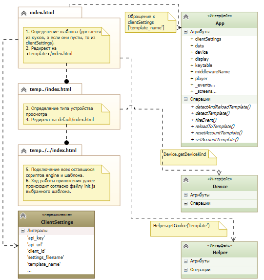

2. Описание содержания и структуры engine¶
Структурно engine состоит из следующих js-скриптов и каталогов:
- app.js - описывает глобальное пространство имен App - объект, через который осуществляется доступ ко всем частям приложения (экранам и переопределенным классам engine). Содержит в себе объекты-экземпляры классов всех экранов, дисплея, плеера и т.д., используемых в шаблоне.
- application.js - скрипт, описывающий сущность BaseApplication - стороннее подключаемое приложение или web-страница.
- data.js - сущность BaseData, набор функций, производящих общение с backend-частью Middleware.
- device.js - объявление и определение класса Device - методов работы с API устройства просмотра. Данный скрипт является родительским для всех остальных device.js каждого устройства (размещаемых в директории engine/device), описывающих работу с каждым конкретным устройством, а также заглушкой для запуска портала в браузере - его методы вызываются в случае, если устройство просмотра не было определено и по умолчанию было задано как ‘mag’. При попытке воспроизведения потока в браузере пользователь увидит эмулятор плеера, в остальном работа портала не будет отличаться от обычной.
- display.js - сущность BaseDisplay, представляет собой набор переменных и методов для задания и определения конфигураций дисплея, а также методы по работе с нажатиями клавиш и управления экранами (сущностями, наследуемыми от BaseScreen).
- helper.js - описание класса Helper, содержащего все основные и вспомогательные функции для работы с DOM-элементами, массивами, строками и т.д.
- keytable.js - сущность BaseKeyTable, класс для работы с таблицами кодов клавиш каждого устройства.
- lang.js - сущность BaseLang, позволяющая менять языковую локализацию приложения каждого шаблона.
- logger.js - класс Logger для работы с отладочной консолью (предназначена только для debug-режима, активируется в файле client.js или с помощью магической комбинации клавиш 01011970, по умолчанию отключена).
- menu.js - сущность BaseMenu, описывающая поведение различных списков в приложении, а также предоставляющая широкий набор методов для работы с ними.
- player.js - сущность BasePlayer, является родительской для плеера внутри каждого шаблона.
- screen.js - сущность BaseScreen, описывает экран приложения, содержащий пользовательский интерфейс и логику обработки кнопок пульта.
- settings.js - сущность BaseSettings, содержит константы и методы для работы с пользовательскими настройками приложения (язык, время, буфферизация и т.д.), которые в дальнейшем могут переопределяться в зависимости от шаблона. Набор настроек также кастомизируем с помощью файла client.js.
- каталог backends - содержит сторонние data.js, то есть наборы методов для работы со сторонними системами Middleware.
- каталог device - содержит файлы device.js для каждого поддерживаемого устройства.
- каталог thirdparty - содержит сторонние библиотеки, необходимые для реализации некоторых функций, отсутствующих на старых устройствах с устаревшей реализацией Javascript.
- client.js - файл, содержащий настройки оператора
clientSettings.
2.1. Механизм определения шаблона¶
Как было описано выше, engine представляет собой ряд сущностей, составляющих основу портального приложения. Все они, взаимодействуя друг с другом на протяжении сессии, образуют жизненный цикл приложения. Практически все данные, используемые сервисом - динамические, то есть они запрашиваются с сервера или высчитываются при каждом новом запуске (исключением, пожалуй, являются только данные авторизации и пользовательские настройки - они записываются в куки устройства). Ниже представлена примерная схема, по которой происходит процесс инициализации приложения, определения шаблона, типа устройства просмотра и подключение и подгрузка нужных скриптов (другими словами, всё, что происходит до запуска init.js каждого шаблона).
Работа шаблона начинается с файла stb\index.html.
- На основе
clientSettingsи настроек, сохраняемых в памяти устройства, определяется шаблон и производится редирект наstb\templates\<имя шаблона>\index.html. - Определяется тип устройства и производится редирект на
stb\templates\<имя шаблона>\default\index.html. - Далее управление переходит файлу
stb\templates\<имя шаблона>\default\media\js\init.js.
2.2. Механизм инициализации приложения¶
Работа любого шаблона начинается с его init.js, а именно, с вызова функции window.onload(), в которой в дальнейшем происходит инициализация устройства, плеера, экранов, событий, настроек и других единиц, требующихся шаблону. Завершается, как правило, работа функции window.onload() открытием экрана авторизации или же открытием главного меню приложения, в случае отсутствия первого.
На рисунке ниже представлена типичная схема работы window.onload() шаблона Justify.
2.3. Механизм инициализации устройства¶
Ещё один интересный процесс, на котором стоит заострить внимание - процесс инициализации устройства. Его суть заключается в определении типа устройства, на котором было запущено приложение, и на основании этого добавляется нужный ../engine/device/<имя устройства>/device.js, содержащий переопределение функций основного device.js. Соответственно, в случае необходимости адаптации приложения под новый тип устройства, необходимо создать новый ../engine/device/<имя устройства>/device.js, в котором все требуемые функции будут переопределены с учётом API нового устройства.
2.A. Документация по коду Engine (JSDoc)¶
Soon